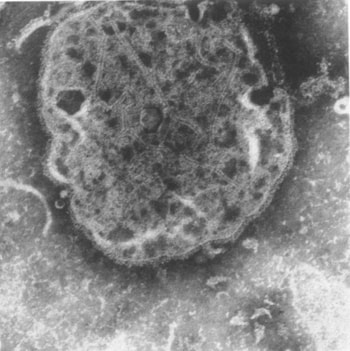

Measles
Home 
Virus Information
- RNA/DNA: RNA
- Capsid Symmetry: Helical
- Un/Enveloped: Enveloped
- Genome Architecture:
- Single-stranded
- Negative (-) Sense
- Linear Genome
- Encodes 8 Proteins
- 3’ Leader Sequence
- 5’ Trailer Sequence
- Order: Mononegavirales
- Family: Paramyxoviridae
- Genus: Morbillivirus
- Species: Measles morbillivirus
- Virion Polymerase: RNA-dependent RNA polymerase (RDRP) packaged in virion
- Size/Dimensions: 150-350 nm diameter
- Genome Size: 15-19 kb
- Host/Vector: Humans (Homo sapiens)
- Discovery Time: 1954
- Discovery Location: Boston, Massachusetts
- Fun Facts: Measles is so contagious, that 90% of people who come into close personal contact with an infected individual also become infected.
| .makerbot |  |
| .stl | |
Summary taken from Wikipedia: Measles virus
Measles virus (MeV) is a single-stranded, negative-sense, enveloped (non-segmented) RNA virus of the genus Morbillivirus within the family Paramyxoviridae.
Humans are the natural hosts of the virus; no animal reservoirs are known to exist.
- Symptoms: Rash (starts at hairline then grows to cover most of the body), High fever (less than 40 °C/104 °F), Koplik spots (spots in the mouth), Malaise, Loss of appetite, Red eyes, Runny nose, Cough
- Tissue Affected: Respiratory system, Immune system, Skin
- Transmission: Aerosol
- Mortality: In the 1920’s 30% of infected individuals died, Today less than0.5% of infected individuals die (in developed countries)
- Treatment: Measles, Mumps, and Rubella (MMR) vaccine prior to or post-infection, At-risk individuals may receive immune serum globulin injections, Various management medications, Fever reducers, Vitamin A supplements, Rest, Use of a humidifier, Drink lots of fluids
Citations:
- Picture from - http://jvi.asm.org/content/3/2/187.full.pdf+html
- International Committee on Taxonomy of Viruses
- Centers for Disease Control and Prevention (CDC): Measles History
- Virus-host Database: Measles morbillivirus
- Mayo Clinic: Measles
- ViralZone: Mobillivirus
- Centers for Disease Control and Prevention (CDC): Transmission of Measles
- Naim, H. Y. Measles virus. Hum. Vaccin. Immunother. 11, 21–6 (2015).
- Takeuchi, K., Miyajima, N., Nagata, N., Takeda, M. and Tashiro, M. Wild-type measles virus induces large syncytium formation in primary human small airway epithelial cells by a SLAM(CD150)-independent mechanism. Virus Res. 94, 11–16 (2003).
- Fundamentals of Molecular Virology, by Nicholas H. Acheson, 2011, 2nd edition by Wiley Press